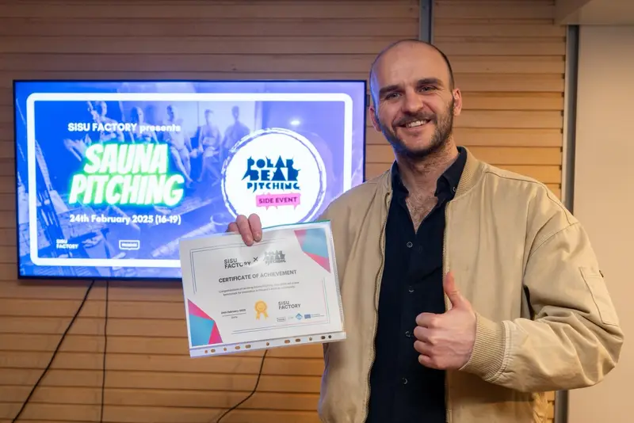
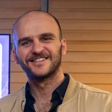

Fungerende prototype · Felttest er næste skridt
Fremdrift på tegningen, ud fra almindelige fotos.
WorkGuardAI estimerer, hvor langt arbejdet er nået i forhold til tegningen, ud fra de fotos, teamet allerede tager, og viser det punkt for punkt på kortet.
Eksempeldata
Problemet
Fremdriften tjekkes stadig ved at gå pladsen rundt.
Nogen går ud, måler i hånden og skriver det ind i en rapport. Når rapporten bliver læst, er arbejdet kommet videre.
Gå og mål
At tjekke fremdriften betyder at gå til hvert punkt med målebånd eller nivellerinstrument.
Skriv det ind
Resultaterne kopieres i hånden over i regneark og rapporter.
Opdag det sent
Når et afsnit kommer bagud, kan der gå dage, før nogen ved det.
Sådan virker det
Fra et foto til fremdrift på tegningen.
Teamet tager fotos som altid. WorkGuardAI knytter hvert foto til et punkt på tegningen og estimerer, hvor langt arbejdet er nået.
Foto
Et kamera på pladsen, en telefon eller en drone tager et almindeligt foto.
Jeres tegning
Fotoet knyttes til et koordinat på jeres DWG-tegning sammen med den planlagte dybde.
Fremdrift på kortet
Den estimerede dybde sammenlignes med tegningen punkt for punkt, med en advarsel, når et punkt kommer bagud.
Eksempeldata
Tegningsformater
Jeres tegning i det format, I har.
Formatuafhængig af design: én intern koordinatmodel plus importfunktioner. DWG virker i dag; de andre formater er planlagt.
- DWGI dag
- IFCPlanlagt
- LandXMLPlanlagt
- PunktskyerPlanlagt
Milepæle
Fra en idé til en fungerende prototype og videre til de første piloter.
Indtil nu
- Nov 24NEXUS Incubator, HelsinkiGennemførte Helsinki Incubators' seks måneders program.
- Oct 25Circular Buildings-udfordringenHelsinki, Espoo og Vantaa: på shortlisten til at afgive tilbud.
- Nov 25Helsinki IncubatorsMed på Slush 2025 blandt Helsinki Incubators' alumner.
- Dec 25MVP færdigEn fungerende prototype, der læser DWG-tegningen og estimerer dybden ud fra fotos.
- Feb 268.000 € i programfinansieringFra LUT University's Baltic Impact Accelerator, Interreg Central Baltic, medfinansieret af EU.
- May 26VINCI EnergiesViste interesse efter en første gennemgang.
Hvor vi er på vej hen
- NæsteFelttestPå en aktiv byggeplads, hvor estimaterne sammenlignes med opmålinger.
- 2027De første piloterFinland og Norden.
- DerefterRegionen og EuropaVækst fra den nordiske base.
- 2030Global aktørVores ambition for 2030.
Planer, ikke løfter.
På scenen
Hvor vi har pitchet.
-
MeOut Summit · BudapestUngarn
Udvalgt som en af 20 startups til at pitche på scenen, 25.–26. november 2026.Pitchede på scenen i Pitch Marathon, november 2026.
-
AIREX 2026 · BakuAserbajdsjan
Pitchede i PropTech Competition den 6. november 2026.
-
Sisu Factory · HelsinkiFinland
Vandt Sauna Pitching den 24. februar 2025.

Team
Folkene bag WorkGuardAI.

Kontakt
Leder I efter bygherrer og entreprenører til et byggeprojekt? Lad os tale sammen.
Vi søger den første aktive byggeplads. Hvis I udfører jord- eller anlægsarbejde og har DWG-tegninger til det, er et kort opkald nok til at se, om en pilot passer.
- 01Et kort opkald
Vi viser prototypen på et demoprojekt og tjekker, at jeres plads passer: jord- eller anlægsarbejde, DWG-tegninger og en person, der kan tage fotos.
- 02Et skriftligt omfang
Én plads, en fast periode og klar databehandling, aftalt i en kort pilotaftale. Vi indlæser jeres DWG-tegning og opretter adgang til jeres hold.
- 03Felttest og evaluering
Jeres hold tager fotos ved plankoordinater. Vi følger op hver uge og sammenligner resultaterne med jeres egne målinger. I får en skriftlig resultatrapport.